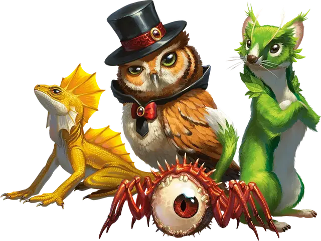

Поиск фамильяра
Find Familiar
1 уровень, Вызов (ритуал)

Время сотворения 1 час
Дистанция 10 футов
Компоненты В, С, М (стоящие 10 зм уголь, благовония и травы, сжигаемые в огне в латунной жаровне)
Длительность Мгновенная
Классы Волшебник
Вы получаете в услужение фамильяра — духа, принимающего облик выбранного вами животного: ворона [raven], кошки [cat], краба [crab], крысы [rat], летучей мыши [bat], лягушки (жабы) [frog], морского конька [sea horse], осьминога [octopus], паука [spider], рыбы (пираньи) [quipper], совы [owl], куницы [weasel], ядовитой змеи [poisonous snake], ястреба [hawk] или ящерицы [lizard]. Появившись в свободном пространстве в пределах дистанции, фамильяр приобретает характеристики выбранного облика, хотя он не Зверь, а Исчадие, Небожитель или Фея (по вашему выбору).
Ваш фамильяр действует независимо от вас, но всегда повинуется вашим командам. В сражении он определяет свою инициативу и действует в свой ход. Фамильяр не может атаковать, но может совершать другие действия как обычно.
Когда хиты фамильяра опускаются до 0, он исчезает, не оставляя физического тела. Он возвращается, когда вы используете это заклинание ещё раз. Вы можете действием временно отпустить своего фамильяра. Тот исчезает в карманном измерении, где будет ждать, пока вы его не призовете. В качестве альтернативы, вы можете отпустить его насовсем. Пока фамильяр временно отпущен, вы можете действием вернуть его в свободное пространство в пределах 30 футов от себя. Всякий раз, когда хиты фамильяра опускаются до 0 или он исчезает в карманном измерении, он оставляет в своём пространстве всё, во что он был одет или нёс.
Пока ваш фамильяр находится в пределах 100 футов, вы можете общаться с ним телепатически. Кроме того, вы можете действием начать смотреть глазами фамильяра и слушать его ушами до начала своего следующего хода, получая преимущество от особых чувств, которыми может обладать фамильяр. В это время для своих собственных чувств вы слепы и глухи.
У вас не может быть больше одного фамильяра одновременно. Если вы накладываете это заклинание, уже имея фамильяра, вы заставляете принять его новый облик. Выберите один из описанных выше обликов. Ваш фамильяр становится этим существом.
Если вы накладываете заклинание с дистанцией «касание», его может передать фамильяр, как если бы это он его накладывал. Ваш фамильяр должен при этом находиться в пределах 100 футов от вас, и он использует свою реакцию, когда вы накладываете его. Если заклинание требует броска атаки, вы используете свой модификатор атаки.
Дополнительные варианты фамильяров
С разрешения Мастера, вместо животного из выше представленного списка, вы можете призвать в качестве фамильяра одно из следующих существ: альмираж [almiraj], заяц [hare], курица Бездны [abyssal chicken], летающая обезьяна [flying monkey], лиса [fox], трессим [tressym].